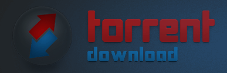

TorrentDownload.ch
TorrentDownload is a meta-search engine for torrents. It allows you to search for the file you need by scanning innumerable torrent websites on the internet. The website has no database of its own, whatever you download is being provided by TorrentDownload’s peer websites. It covers almost all the categories that are normally offered by other torrent websites. The speed of the download depends on the seeds and leeches of the peer’s website.
Content
TorrentDownload.ch
- Rating: N/A
- Year Founded: N/A
- Monthly Visitors: N/A
- Download Speed: N/A
Safety
For a torrent search engine to be safe for browsing, it needs to have an SSL certificate, which TorrentDownload does have. By using tools such as SEOQuake and MOZ, you can easily check the credibility of a website by gauging Domain Score (DS) and Trust Score (TS). Based on my research, TorrentDownload has a domain score of 14 and a trust score of 31 which is quite decent. Sure, it’s not uncommon for torrent sites to have a DS less than 15 and a TS less than 40. But given that TorrentDownload has been live for nearly two decades, I think its Domain Score needs to be higher but again establishing an authoritative torrent site is not easy.
In addition to the stats based background check, you must also ensure whether a website is filled with adware or not. If you see tons of adverts popping in and around the website, the best decision would be to bounce off rather than endangering your device with malware such as a trojan virus. Thankfully, TorrentDownload doesn’t seem to have any pop-up ads or banners, which is a positive sign.
Content
A metasearch engine with no content can have benefits too and TorrentDownload has several perks that can make you choose it above other torrent websites.
Speed – When it comes to the speed of torrents, with TorrentDownload you can be assured of faster downloads in comparison to other torrent sources. The formula of this unparalleled speed is the website’s ability to find the torrents with the ideal ratio of seeders and leechers. You can choose the torrent that you want to download by looking at the details mentioned alongside.
Latest free indie content: Want to download an free indie game or free indie TV series? With TorrentDownload you can. Going through the free indie content library of every website to find the latest torrent file is something any seasoned free indie movie buff will try to avoid. To help them find the files they need, websites like TorrentDownload can be of great help.
No restrictions – User limit reached! Ratio too low for download! To view this content, get a premium member account! These are some of the common and annoying pop-ups/messages you might have come across while downloading content from popular torrent websites or private trackers. TorrentDownload, on the other hand, allows you to download torrents without any user restrictions or registrations. You can download as many files as you want, without any registration or membership.
Top Torrents – The website has a ‘Top Torrents’ page that shows the best torrents that can be downloaded from the website. These torrents are ranked on the basis of speed, number of downloads, comments, ratings, and more.
Design
Considering that TorrentDownload is a meta-search engine, the website has settled for a very basic layout. It has very few pages and most of them have a similar design. The elements on those pages include text boxes, search bars, buttons, links, icons, and tables. These elements make navigation quite easier and convenient.
Header – The website has a very simple header with few options. It consists of options like ‘Home’, ‘Latest Torrents’, ‘Top Torrents’, ‘Tags’, ‘Profile’, and ‘Help’. These options take you to the different pages of the website.
Inner Pages – The simple design of the website is incorporated in the inner pages too. They consist of links, tables, texts, search bars, buttons, and icons. Pages like ‘Home’, ‘Latest Torrents’ and ‘Top Torrents’ have a similar layout that comprises a table which is divided into different parts such as ‘Name of the torrent’, ‘Upload date’, ‘File size’, ‘Seeders’, and ‘Leechers’.
Other pages like ‘Tags’, ‘Profile’, and ‘Help’ have different layouts that have different designs and layout.
Content – As mentioned above, TorrentDownload does not have any content of its own. It basically sources torrents for visitors from its peer websites or other torrent providers on the internet. Visitors don’t have to pay any money for the downloads or to access the free indie content. TorrentDownload covers almost all the content categories that you can expect from a torrent aggregator. Moreover, the website lets you choose from a plethora of options that you can find in the search results.